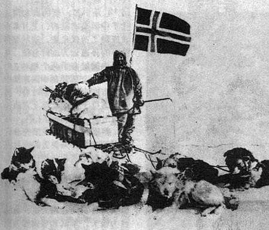

挪威的两位伟大极地探险家弗里德约夫·南森和罗阿尔德·阿蒙森生活在同一个时代，这是历史的巧合之一。阿蒙森1872年出生于挪威南部的萨普斯堡，比南森年轻11岁。他放弃了原来计划的医生职业，决定献身于极地研究。作为一名合格的海员，他曾经在一艘航行于北极海域的商船上工作过。后来他以大副的身份参加了1897至1899年“贝尔吉克号”在南极首次越冬的探险。
1900年，阿蒙森买了一条只有21.9米长，3.3米宽，载重47吨的小汽船，命名"格加"号，筹划他的第一次北极探险，但此后他奔波了3年仍未筹足资金，迫于债权人的逼债，1903年6月16日午夜他和早就精心挑选的6个伙伴悄悄地离开奥斯陆码头，8月20日进入兰开卡斯特海峡，两天后登上了富兰克林当年越冬的那个小岛，他们沿富兰克林当年的路线南下，终于观测到了磁针垂直的磁北极点。此后他们驶往威廉王岛度过冬，这正富兰克林探险队全军覆没的地方。但他们的运气好却得多，在这不但可以猎到驯鹿，他们还与加拿大北极地区奈茨利克爱斯基摩人交上了朋友，与他们一起打猎。正是这次探险阿蒙森深刻认识到了爱斯基摩人在极地酷寒环境中的生存智慧。他仔细观察学习他们的饮食、服装，驾驭爱斯基摩犬狩猎等技能。
阿蒙森在北极向爱斯基摩人学到的生存知识，对他后来冲击南极点的成功起到了十分关键的作用。他在与英国探险家斯科特上校展开的南极点竞争中之所以能率先到达南极点并且安危撤退，不仅仅是因为他的高超组织才能，而且还包括他向爱斯基摩人学习了如何用裘皮保暖，以及熟练地驾驭爱斯基摩犬；而斯科特带的西伯利亚矮种马刚刚登陆就已死亡大半，他们带的机械化摩托雪橇也因技术不成熟，在向极地进发前就全部报废了。
以往航行中获得的经验为阿蒙森提供了充足的信心。他决定挑战困扰航海家达300年之久的“西北航线”。探险家们长久以来一直意识到北美大陆以北有一条连接欧亚的航道，但是从未有任何一条船能够完成全部航程。阿蒙森购买了排水量45吨造型坚固的“格约亚号”。船上装备有风帆和一个13匹马力的引擎。“格约亚号”于1903年夏季从奥斯陆峡湾缓缓驶出，六名船员准备在布满坚冰的“西北航线”水域完成航行。1903年6月，阿蒙森的探险队开始远航寻找西北航道。整队人马在深入北极圈的威廉王岛上安营扎寨，度过了两个冬季，并在马更些岛上又度过了一个冬季。
“格约亚号”于1906年8月突破最后一段航线成功地完成了航行。水手们在航行过程中还收集到了宝贵的科学数据，其中最重要的是有关地磁和北磁极准确位置的观测。此外，他们还收集了一些“西北航线”沿途爱斯基摩人的人种学资料。
在初战告捷的鼓舞下，阿蒙森将注意力转向北极。他计划在白令海峡北部让自己的船冻结在浮冰上。然而，他无法得到必要的经济资助。1909年9月传来了美国人罗伯特·皮尔里和弗雷德里科·库克抵达北极的消息。阿蒙森遂决定推迟探索北极，并同时争取在罗伯特·福尔肯·斯科特之前抵达南极，而这时斯科特已经率领一个大型远征队出发了。
阿蒙森于8月份驾驶由南森提供的“前进号”向南出发。当时船只为了通过白令海峡必须绕道合恩角。因此当“前进号”驶向南方时，没人能想到他已经改变了计划。
当“前进号”在马德拉岛停泊时，阿蒙森通知探险队员他们将继续向南，而不是向北航行。斯科特收到一份电报，得知挪威探险队正在向南极进发的消息。
阿蒙森在鲸湾安营扎寨。这里与斯科特的出发地点麦克默多海峡相比距离南极更近。不过，鲸湾与南极之间的地形尚无人知晓，而斯科特却可以沿着他的英国同胞沙克尔顿1908年标明的路线前进。阿蒙森与四名伙伴、四部雪橇和五十二条极地犬于1911年10月19日离开营地。
为了抵达一个冰川交错的高大山脉的脚下，挪威探险队曾穿越遍布危险的罗斯屏障。在当时看来，继续前进的征程上充满了风险。然而，由于他们技术娴熟和运气较好，探险队员们奋力登上了海伯格冰川，翻越了山脉，并最终抵达了通往南极的高原。1911年12月14日，他们在南极上空冉冉升起挪威国旗。阿蒙森在南极进行了一些观测研究，于12月17日离开。而他的竞争对手斯科特队则在5个星期后才到达。斯科特抵达南极时发现了阿蒙森的旗帜和帐篷。
阿蒙森完成了南极探险后，世界上已经不存在能挑战这个探险天才的地方了。然而他还想做一件事情：在空中探索北冰洋。他和探险队于1925年乘坐“N25号”和“N26号”水上飞机冒险远征。飞机在北纬88度被迫在冰上着陆。但探险队成功地使其中一架飞机重新起飞，于三星期后返回斯瓦尔巴德群岛。
美国人林肯·埃尔斯沃思资助并和阿蒙森共同参加了这次飞机探险。翌年，阿蒙森、埃尔斯沃思和意大利人安贝托·诺比尔共同领导了从斯瓦尔巴德群岛乘“挪威号”飞艇飞越北极前往阿拉斯加的探险飞行。这些探险家飞越了此前人所未知的地域，填补了世界地图上最后一个空白点，白色的荒原。
两年后诺比尔乘坐“挪威号”的姊妹飞艇“意大利号”进行第二次北极飞行，中途失踪。阿蒙森参加了前往寻找飞艇的搜救队。另外一只搜救队发现了飞艇和仍然活着的诺比尔。但是阿蒙森与他的伙伴却再也没有回来。
罗阿尔德·阿蒙森的南极之旅 罗阿尔德·阿蒙森的南极之旅(完整版默片)